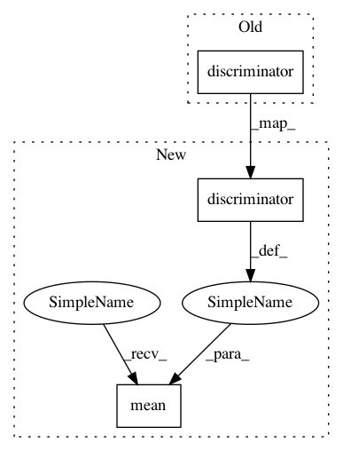

f37d0f2da815d3674dbba5ef1d8711357348c94f,implementations/wgan/wgan.py,,,#,88
Before Change
real_validity = discriminator(real_imgs)
real_validity.backward(valid)
// Train on fake images
fake_validity = discriminator(fake_imgs)
fake_validity.backward(fake)
d_loss = real_validity - fake_validity
After Change
// Generate a batch of images
fake_imgs = generator(z)
// Adversarial loss
loss_D = -torch.mean(discriminator(real_imgs)) + torch.mean(discriminator(fake_imgs))
loss_D.backward()
optimizer_D.step()
In pattern: SUPERPATTERN
Frequency: 3
Non-data size: 3
Instances
Project Name: eriklindernoren/PyTorch-GAN
Commit Name: f37d0f2da815d3674dbba5ef1d8711357348c94f
Time: 2018-05-07
Author: eriklindernoren@live.se
File Name: implementations/wgan/wgan.py
Class Name:
Method Name: